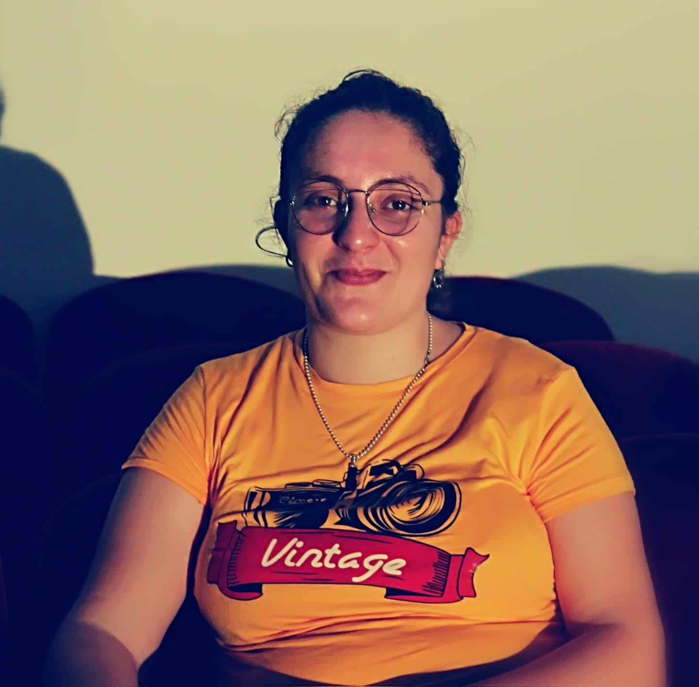

my name is sayadi karama
28-09-1991 in Italy
I'm a studente in music I play instrument piano and oud then I work technical of the sound in the festifal in tunisa I workes in festival carthage,hammamet also i work videos this my video this my page
this in my first soundmy level language
Arabic
100%
french
80%
English
60%
Italian
70%
my Hobby
music
100%
sport
80%
technologie
80%
films
70%
PROFESSIONAL EXPERIENCE
| years | job |
|---|---|
| 2021 | Communication Director - Cultural Center of Hammamet |
| 2020 | Assistance Coordination project under confinement - Cultural Center of Hammamet |
| 2020 | Assistance Project coordination and communication direction at ACT NOW – Cultural Center of Hammamet |
| 2019 | Technical Director of the JMC Carthage Music Days. |
| 2019 | Technical assistant at the Gabes Festival |
| 2019 | Technical coordination at Carthage Dance Festivals. |
| 2018 | Plate manager and sound and video technician: "Re-existence" by Nawel Skandrani. |
| 2018 | Sound Technician - Festival Gabes |
Education
| years | Institute |
|---|---|
| 2019-2020 | "Master of research in music and musicology" at the Higher Institute of Music in Tunis. |
| 2016 | Applied degree in design - Audiovisual specialty” at the Institute of Fine Arts of Sousse. |